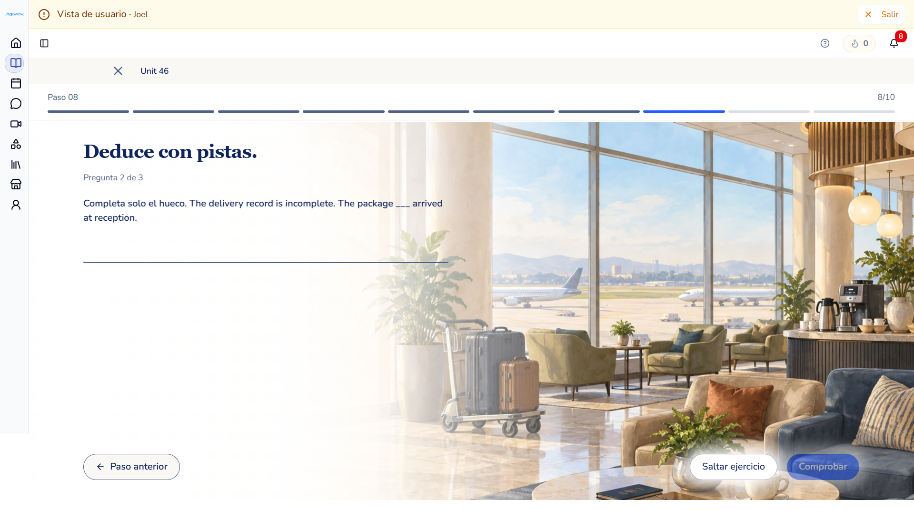
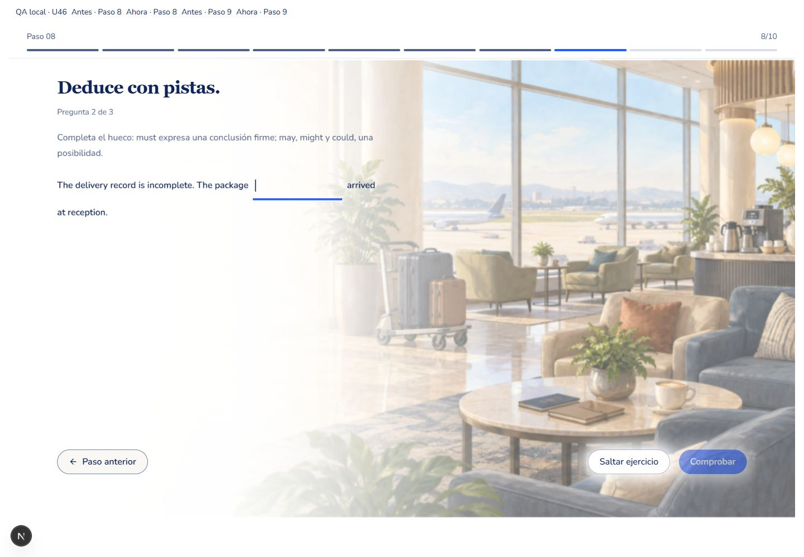
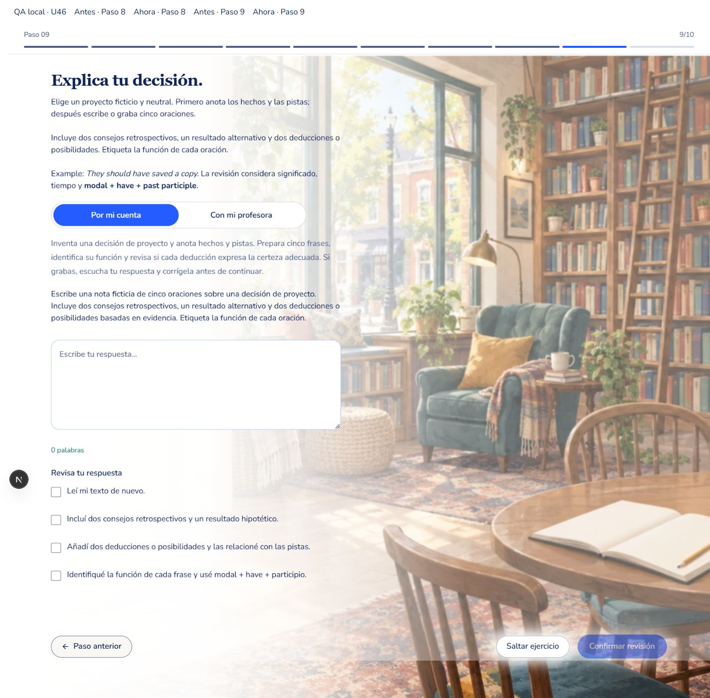
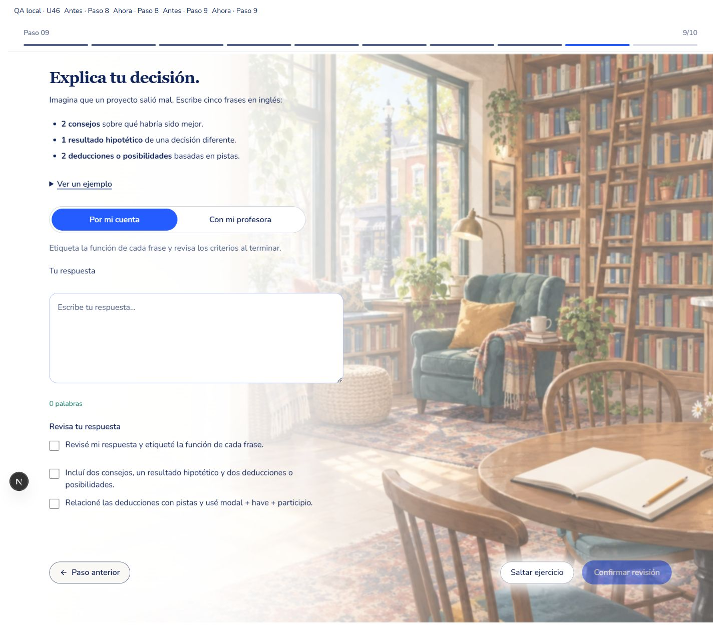
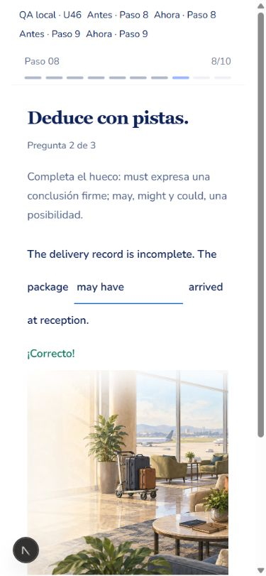
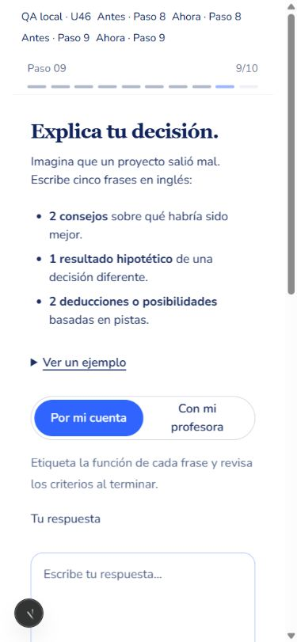
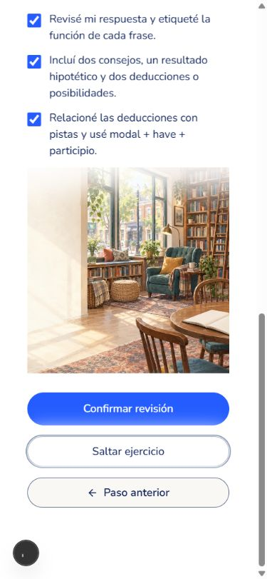
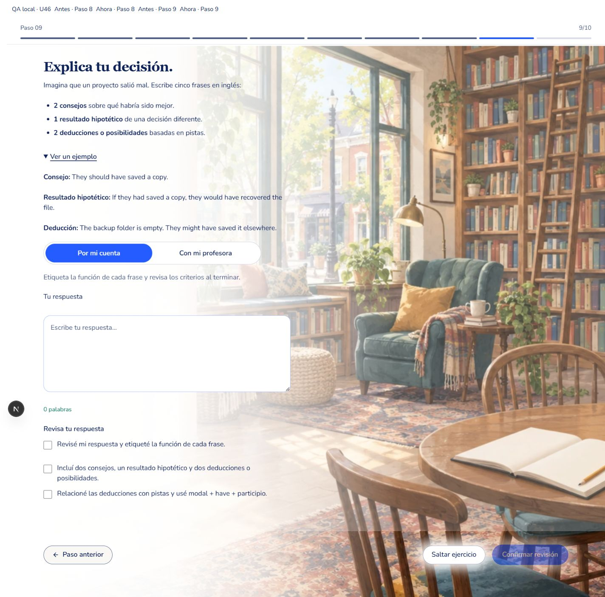

Las referencias provienen de las capturas del usuario. Las imágenes de implementación son capturas reales del recorrido, con una barra QA temporal. La cabecera autenticada y el sidebar siguen intactos. Revisión: 1440×1000 y 390×844; ambientes completos, lectura protegida y controles conservados.








Todos los requisitos registrados pasan; sin desviaciones materiales pendientes. Los audios, las claves válidas, los IDs y el historial estudiantil se conservan. La simulación transaccional de dev terminó en ROLLBACK.